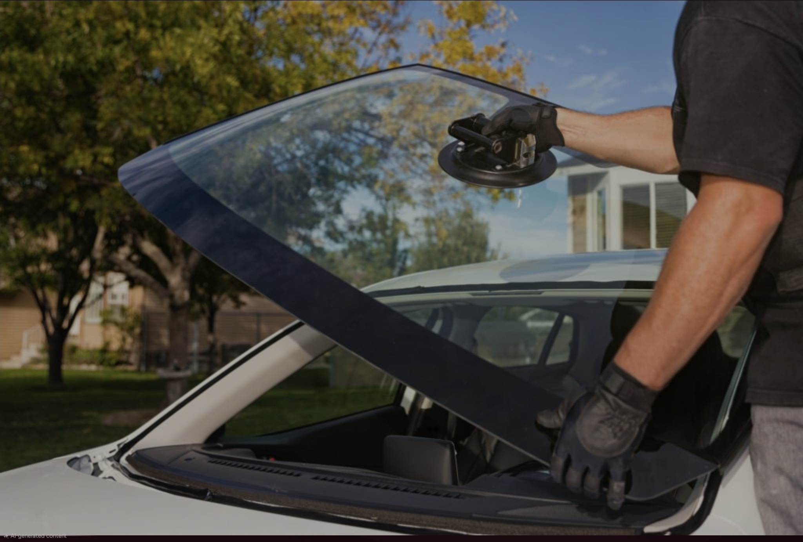
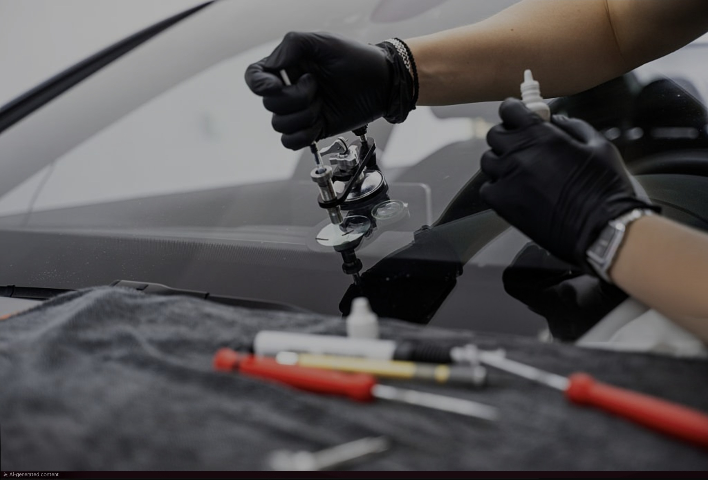
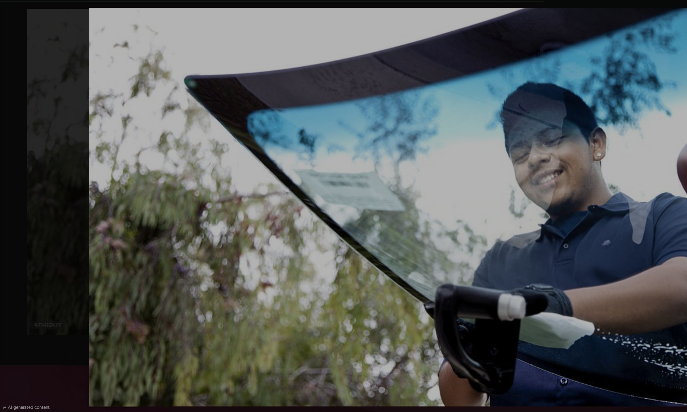

Fast, affordable auto glass repair and windshield replacement across the Tri-Cities. Most repairs done in under an hour — at your home, office, or wherever you're parked.
From a small chip to a full windshield replacement, we handle it all — at your location, on your schedule.
Full swap using OEM-match glass. We handle removal, installation, and seal — typically in 60–90 minutes at your location.
Get a Quote →Small crack or bullseye chip? We inject resin to stop it from spreading. Fast fix that keeps your glass — and wallet — intact.
Get a Quote →Side windows, rear windows, and quarter glass — if it's broken or cracked, we fix or replace it. All makes and models.
Get a Quote →Cracked or shattered sunroof? We source replacement panels and seal them tight so leaks stay outside where they belong.
Get a Quote →Clipped in a parking lot or hit on the highway — we replace mirror glass and full assemblies for a clean factory fit.
Get a Quote →Home, office, parking lot — wherever you are in the Tri-Cities, we bring the tools to you. No tow, no trip, no hassle.
Call to Book →No waiting at a shop. Our fully equipped mobile units serve Kennewick, Richland, Pasco, and surrounding areas — at your schedule.
We work directly with most insurance carriers. If glass repair is covered, we handle the paperwork so you don't have to.
We use dealer-equivalent glass that meets original manufacturer specs — because your windshield is a safety component, not just a window.
Every installation is backed by our warranty. If the seal fails or something doesn't look right, we fix it. Period.


A small chip can spread across your entire windshield overnight — especially in Washington's heat and cold swings. We inject professional-grade resin that bonds to the glass and stops the damage in its tracks.
Most chip repairs take under 30 minutes. Many insurance policies cover it at zero cost to you.
☎ Call Now — It's Free to Ask"I had a big rock chip on the highway and called in the morning. They came to my office in Kennewick the same afternoon. Total time start to finish was maybe 45 minutes. Fantastic service."
"My insurance covered the whole windshield replacement and these guys handled everything with the insurer directly. I didn't have to make a single call. Showed up on time, clean work, zero hassle."
"Cracked rear window on a Friday evening. They had a technician out to my house in Pasco the next morning. Price was fair, install was flawless. I've already referred two neighbors."
We dispatch throughout the greater Tri-Cities area. If you're unsure whether we cover your location, just call — we'll tell you straight.

Call for a free quote. We'll tell you exactly what it costs and how fast we can get to you. No pressure, no surprises.
☎ Call Now — (509) 234-0000